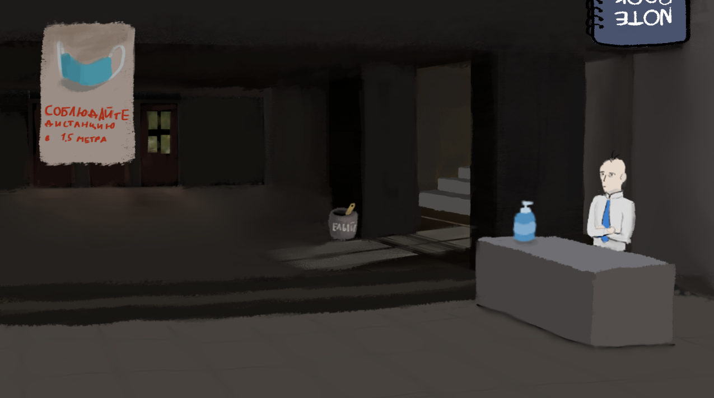

ИГРОВОЙ ПРОЦЕСС
Раскройте тайну главного корпуса
Диалоговая система
- Выбирайте с кем и о чём разговаривать
- Персонажи запоминают ваши слова и действия
- Разные ответы открывают уникальные возможности
Исследование
- Осматривайте игровые локации
- Находите разные ключевые предметы
- Комбинируйте находки для новых выводов
Детективный блокнот
- Автоматически фиксирует ключевые предметы и события
- Делайте собственные заметки и выводы
- Финал зависит от ваших записей и решений
Галерея
